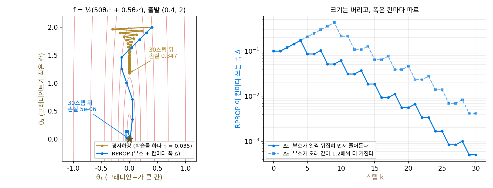
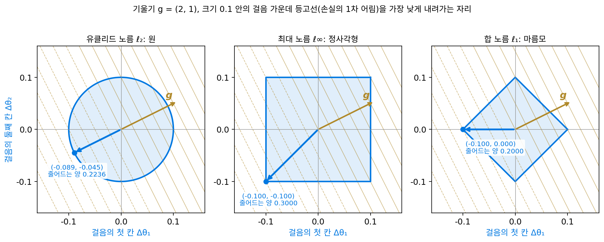
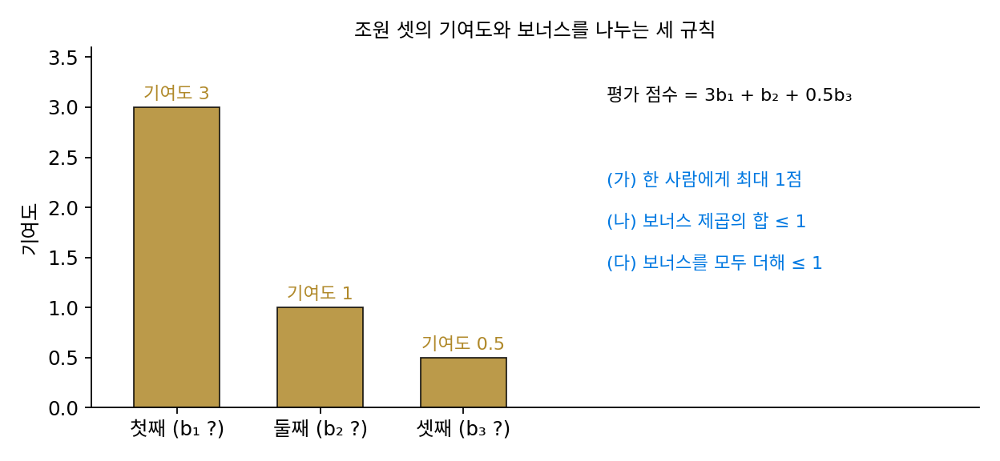
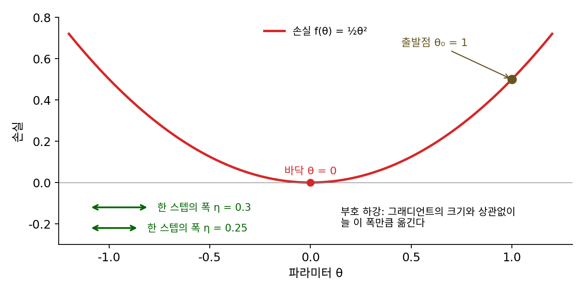
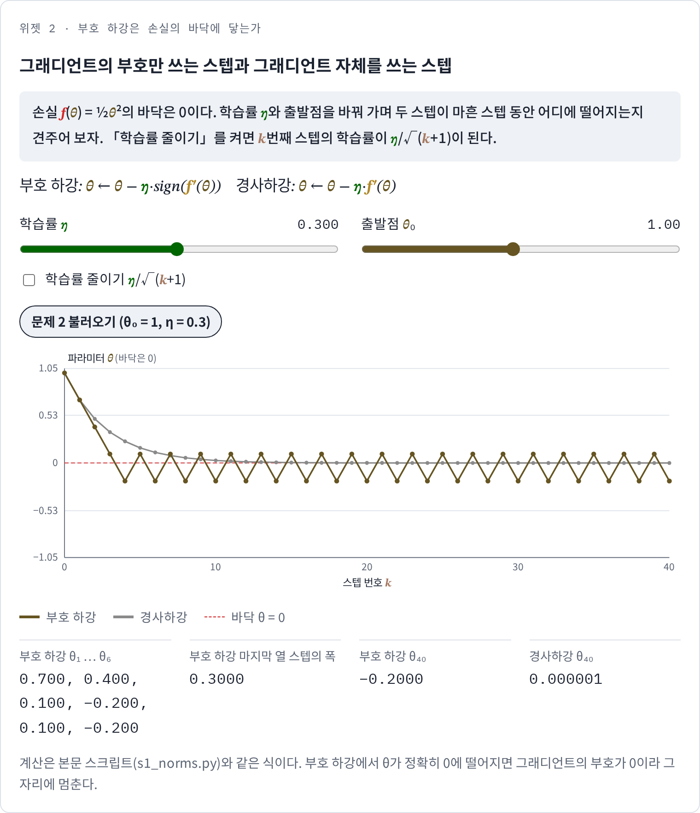
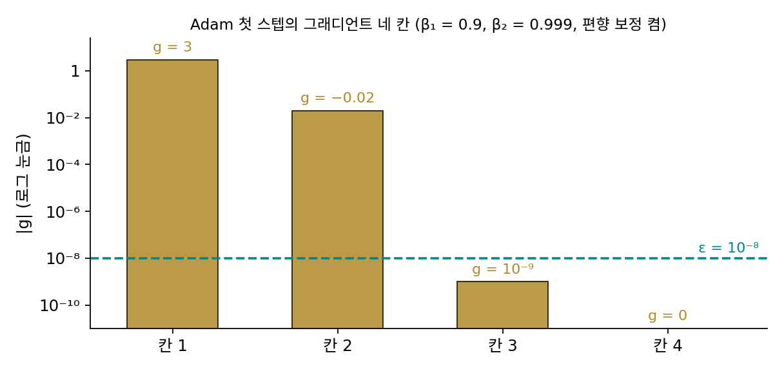

Muon: 노름을 바꾸면 가장 가파른 방향이 바뀐다
이 장의 물음
Adam 으로 큰 언어 모델을 학습시키는 설정 파일을 열면, 학습률과 가중치 감쇠 몇 줄 말고는 옵티마이저에 대해 고칠 것이 별로 없다. 그래디언트 제곱의 평균으로 파라미터 한 칸 한 칸의 스텝을 나눠 주는 Adam 은 「그래디언트가 큰 칸은 덜, 작은 칸은 더」 움직여서, 칸마다 크기가 수천 배씩 다른 그래디언트를 고르게 다듬어 준다. 그래서 오랫동안 「옵티마이저는 AdamW 로 두면 된다」가 상식이었다.
그런데 신경망의 가중치는 숫자를 한 줄로 늘어놓은 것이 아니다. 한 층의 가중치는 입력 벡터를 받아 출력 벡터를 내놓는 행렬이고, 그 층의 그래디언트도 같은 모양의 행렬이다. 그런데 그래디언트 행렬이 입력을 늘이는 배율은 입력의 방향에 따라 수십, 수백 배씩 차이 날 수 있다. 어떤 입력 방향으로는 그래디언트가 거대하고 어떤 방향으로는 거의 없을 때, 칸 하나하나를 고르게 다듬는 Adam 은 이 「방향마다의 불균형」을 볼 수 있을까?
2024년 가을, 작은 언어 모델을 정해진 성능까지 누가 가장 빨리 학습시키나를 겨루는 공개 경주에서, 옵티마이저 하나를 AdamW 에서 다른 것으로 바꾼 기록이 학습 속도를 3분의 1쯤 끌어올렸다. 바뀐 것은 그래디언트 행렬을 어떻게 다듬어 스텝으로 바꾸느냐 하나였고, 이듬해에는 파라미터가 1조 개 규모인 모델이 같은 계열의 옵티마이저로 학습되었다.
이 장은 다음 물음에 차례로 답한다.
- 경사하강이 「가장 가파른 내리막」이라는 말에는 어떤 약속이 숨어 있었을까? 그 약속을 바꾸면 가장 가파른 방향도 바뀔까?
- 스텝의 크기를 칸마다의 최댓값으로 재면 어떤 옵티마이저가 나올까? Adam 과는 무슨 사이일까?
- 행렬인 스텝의 크기를 행렬답게 재면, 가장 가파른 스텝은 어떤 모양일까?
- 행렬다운 가장 가파른 스텝을 학습 스텝마다, 층마다 구하는 데 드는 계산을 감당할 수 있을까?
가장 가파른 방향: 노름이 「같은 크기」를 정한다
경사하강의 한 스텝은 그래디언트의 반대쪽이었는데, 「짧은 거리 안에서 손실이 가장 빨리 줄어드는 방향이 그래디언트의 반대쪽」이기 때문이었다. 그런데 「짧은 거리」의 거리는 무엇으로 쟀던가? 지도 위에서 자로 재는 길이와 같은, 스텝 벡터의 칸을 제곱해 더한 뒤 제곱근을 씌운 유클리드 길이였다. 그렇다면 다른 자로 거리를 재면 어떨까? 예를 들어 「한 칸이라도 0.1 넘게 움직이면 안 된다」는 규칙은 어떤가. 파라미터마다 따로 움직일 수 있는 폭이 정해져 있는 셈이라, 실제 하드웨어나 학습 안정성을 생각하면 그리 이상한 규칙도 아니다. 이 규칙 아래에서도 가장 가파른 스텝은 여전히 그래디언트의 반대쪽일까?
역사: 그래디언트의 크기를 버리고 부호만 쓴 사람들
그래디언트의 크기를 아예 버리고 부호만 쓰자는 생각은 신경망 학습에서 여러 번 나왔다. 독일 카를스루에 대학의 마르틴 리트밀러(Martin Riedmiller)와 하인리히 브라운(Heinrich Braun)은 1992년 무렵 RPROP(탄력적 역전파, resilient backpropagation)이라는 방법을 만들어, 1993년 신경망 학회(IEEE ICNN) 논문으로 널리 알렸다. RPROP 이 겨눈 문제는 층마다, 가중치마다 그래디언트의 크기가 너무 달라서 학습률 하나로는 어떤 가중치는 너무 크게, 어떤 가중치는 너무 작게 움직인다는 것이었다. RPROP 은 그래디언트의 크기는 보지 않고 부호만 보아 가중치를 움직이고, 움직이는 폭은 가중치마다 따로 두어, 부호가 연달아 같으면 키우고 뒤집히면 줄였다.

25년쯤 뒤에는 부호가 전혀 다른 필요에서 다시 나왔다. 여러 대의 컴퓨터가 나눠 학습할 때는 스텝마다 그래디언트를 주고받아야 하는데, 파라미터가 수억 개면 이 통신이 계산보다 느려진다. 제러미 번스타인(Jeremy Bernstein)과 동료들은 2018년 국제 기계학습 학회(ICML)에 낸 「signSGD: 비볼록 문제를 위한 압축 최적화」에서 그래디언트의 부호, 곧 칸마다 1비트만 보내자고 했다. 부호만 써도 확률적 경사하강과 같은 수렴 속도를 낸다는 것을 보였고, 부호에 모멘텀을 더한 판(Signum)은 이미지넷 학습에서 Adam 과 비슷한 정확도와 학습 속도를 냈다고 보고했다. 왜 크기를 버려도 되는지, 버리면 무엇을 얻는지는 숫자로 보는 것이 빠르다.

가중치마다 그래디언트 크기가 다르면, 가중치마다 학습률을 따로 주면 되잖아요. 지금은 Adam 이 알아서 해 주고요.

Adam 이 나온 것은 2014년이에요. RPROP 보다 스무 해 뒤죠. 1992년에 가중치 수천 개에 학습률을 따로 둔다면, 그 수천 개의 값은 누가 정해요?

음… 손으로 하나하나 맞출 수는 없고요. 그래서 크기는 안 보고, 부호가 연달아 같은지 뒤집혔는지만 보고 폭을 키우고 줄인 거예요?

그래요. 그런데 크기를 버린 스텝을 「어떤 자로 잰 가장 가파른 스텝」으로 읽는 설명은 이 절의 끝, 2024년 글에 가서야 나와요.

signSGD 쪽은 이유가 또 다르네요. 통신이 계산보다 느리다니, 요즘 네트워크라면 그냥 보내면 될 것 같은데요.

파라미터가 1억 개면 32비트 실수로 400MB예요. 그걸 스텝마다 여러 대가 주고받아요. 부호만 보내면 칸마다 1비트라 12.5MB, 32분의 1이죠.

RPROP 은 학습률을 정할 수 없어서, signSGD 는 다 보낼 수가 없어서 크기를 버렸네요. 그런데 버리고도 학습이 됐다면, 크기를 버린 스텝도 어떤 뜻에서는 「가장 가파른」 스텝인 걸까요?
그래디언트 (2, 1) 에서 크기 0.1 의 스텝 고르기
파라미터가 둘이고, 지금 자리의 그래디언트가 g = (2, 1)이라고 하자. 첫 칸 쪽으로 손실이 두 배 가파르다. 스텝 Δθ를 디디면 손실은 1차 근사로 ⟨g, Δθ⟩ = 2Δθ₁ + Δθ₂만큼 바뀐다. 스텝의 크기를 0.1로 묶고, 후보 셋을 비교해 보자. 그래디언트의 반대쪽, 두 칸을 똑같이 줄이는 부호의 반대쪽 (−1, −1), 큰 칸만 줄이는 (−1, 0)이다. 크기를 재는 자를 둘 쓴다. 하나는 유클리드 길이(칸의 제곱합의 제곱근)이고, 다른 하나는 칸의 절댓값 가운데 가장 큰 것이다. 후보마다 두 규칙 각각으로 잰 크기가 0.1이 되게 늘이거나 줄였다(sources/muon/s1_norms.py).
| 후보 방향 | 유클리드 길이 0.1 로 맞춘 스텝 | 줄어드는 손실 | 가장 큰 칸 0.1 로 맞춘 스텝 | 줄어드는 손실 |
|---|---|---|---|---|
| 그래디언트 반대쪽 | (−0.0894, −0.0447) | 0.2236 | (−0.1, −0.05) | 0.2500 |
| 부호 반대쪽 (−1, −1) | (−0.0707, −0.0707) | 0.2121 | (−0.1, −0.1) | 0.3000 |
| 큰 칸만 (−1, 0) | (−0.1, 0) | 0.2000 | (−0.1, 0) | 0.2000 |
유클리드 길이로 재면 그래디언트의 반대쪽이 1등이고, 경사하강의 「가장 가파른 내리막」이 바로 이 말이었다. 그런데 칸의 최댓값으로 재면 1등이 부호 쪽으로 바뀐다. 그래디언트 반대쪽 스텝은 첫 칸이 0.1에 닿는 순간 멈춰야 해서 둘째 칸을 0.05밖에 쓰지 못한다. 규칙은 둘째 칸도 0.1까지 움직이도록 허락하는데, 둘째 칸에 허락된 폭의 절반을 쓰지 않고 남긴 것이다. 부호 스텝은 두 칸을 모두 끝까지 쓴다. 유클리드 길이로 재면 부호 스텝 (−0.1, −0.1)의 길이는 0.1414로 「규칙 위반」이지만, 칸의 최댓값으로는 0.1이다. 같은 그래디언트, 같은 「크기 0.1」인데 무엇을 크기라 부르느냐에 따라 가장 가파른 스텝이 달라진다.
크기를 재는 규칙 ‖·‖을 노름이라 했다. 노름 하나를 정하면, 그 노름으로 잰 크기가 η 이하인 스텝 가운데 1차 근사로 본 손실을 가장 많이 줄이는 스텝이 그 노름 아래의 가장 가파른 스텝이다.
유클리드 노름 아래에서는 그래디언트의 방향을 그대로 두고 길이만 맞추지만, 최대 노름 아래에서는 크기를 모두 버리고 부호만 남긴다. 칸마다 부호를 따라 똑같은 폭으로 움직이는 이 스텝을 부호 하강 (그래디언트의 부호만 따라 칸마다 같은 폭으로 걷기 / sign descent)이라 한다. 줄어드는 손실도 노름마다 다른 꼴로 나온다. 유클리드 노름이면 η‖g‖₂ = 0.1 × 2.2361이고, 최대 노름이면 칸 절댓값의 합 η(|g₁| + |g₂|) = 0.1 × 3이다. 스텝을 재는 노름과 그래디언트를 재는 노름이 짝을 이룬다. 이 짝을 쌍대 노름(dual norm)이라 부르는데, 이 장에서는 이름만 알아 두면 된다.
왜 그런지는 그림으로 보면 한눈에 보인다. 크기가 0.1 이하인 스텝 전체는 유클리드 노름으로는 원, 최대 노름으로는 정사각형이다. 손실이 같은 만큼 바뀌는 스텝들은 그래디언트에 수직인 직선이고, 그 직선을 그래디언트 반대쪽으로 밀어 가다가 도형에서 마지막으로 닿는 점이 가장 가파른 스텝이다. 원에서는 그 점이 그래디언트 반대쪽 끝이고 정사각형에서는 모서리이며, 모서리는 칸마다 ±0.1, 곧 부호다.

표의 비교는 스텝 한 번, 그것도 1차 근사에 대한 것이었는데, 부호 하강을 여러 스텝 되풀이해도 손실의 최솟값에 닿을까? 아래 문제 2에서 먼저 손으로 따라가 본 뒤 위젯 2로 확인해 보자.
ML에서: 이동 평균을 끈 Adam 은 부호 하강이다
Adam 의 한 스텝은 그래디언트의 이동 평균 m̂을 그래디언트 제곱의 이동 평균의 제곱근 √v̂로 칸마다 나눈 것이었다. 두 이동 평균의 계수 β₁, β₂를 0으로 두어 평균을 끄면, m̂은 지금 그래디언트 g이고 √v̂는 |g|다.
번스타인과 래커 뉴하우스(Laker Newhouse)는 2024년 글 「옛 옵티마이저, 새 노름(Old Optimizer, New Norm: An Anthology)」에서 이 관찰을 출발점으로 삼았다. 이동 평균을 끈 Adam 은 최대 노름 아래의 가장 가파른 스텝이고, 다른 몇몇 옵티마이저도 저마다 어떤 노름 아래의 가장 가파른 스텝으로 읽힌다는 것이다. 이렇게 보면 「어느 옵티마이저가 좋은가」라는 물음은 「파라미터의 스텝을 어떤 노름으로 재는 것이 맞는가」라는 물음으로 바뀐다. 최대 노름은 칸마다 따로 상한을 두니 그래디언트가 아주 작은 칸도 큰 칸과 같은 폭으로 움직이고, Adam 이 칸마다 크기가 다른 그래디언트를 잘 다루는 것도 이 때문이다. 이동 평균을 켜면 스텝이 부호에서 조금씩 벗어나는데, 이동 평균이 스텝을 어떻게 바꾸는지는 아래 문제 3에서 계산한다.
문제 1. 보너스 점수 나누기
조원 셋의 기여도가 3, 1, 0.5다. 조장이 보너스 b₁, b₂, b₃를 나눠 주고, 조의 평가 점수는 기여도와 보너스를 곱해 더한 3b₁ + b₂ + 0.5b₃로 매겨진다. (가) 규칙이 「한 사람에게 최대 1점」이면 어떻게 나눠야 평가 점수가 가장 큰가? (나) 규칙이 「보너스 제곱의 합이 1 이하」면? (다) 규칙이 「보너스를 모두 더해 1 이하」면? 세 규칙 모두에서 「가장 많이 기여한 사람에게 1점 몰아주기」와 비교하라.

(가)는 한 사람 상한만 있으니까 막는 게 없어. 셋 다 1점씩 주면 3 + 1 + 0.5 = 4.5야. 첫째에게만 주면 3이고.
(나)는 제곱합이 1로 묶였으니까 한 사람에게 더 줄수록 다른 사람에게 줄 보너스가 줄어. 셋에게 똑같이 1/√3씩 주면 2.60, 첫째에게 다 주면 3이야.
그 둘 가운데서는 첫째에게 다 주는 3이 크네. 그런데 기여도에 비례해서 줘 보면 어떨까. 기여도 벡터를 길이 √(9 + 1 + 0.25) = 3.20으로 나눈 (0.94, 0.31, 0.16)이면 평가 점수가 3.20이야. 이쪽이 더 커.
그럼 (다)는요? 합이 1로 묶였을 때 둘째에게 0.1을 떼어 주면 점수가 어떻게 바뀌죠?
첫째에게서 0.1을 빼면 3 × 0.1 = 0.3이 줄고, 둘째에게 주면 1 × 0.1 = 0.1이 늘어요. 떼어 줄수록 손해니까 여기서는 첫째에게 몰아주는 3점이 가장 커요.
같은 기여도인데 규칙에 따라 최선이 「모두에게 상한까지」, 「기여도에 비례」, 「한 사람에게 몰아주기」로 갈리네요.
기여도를 그래디언트로, 보너스를 스텝으로 읽으면요?

아까 표에서 최대 노름은 부호, 유클리드 노름은 그래디언트 방향이었던 거랑 똑같아요. 셋째 규칙은 마름모 모양의 합 노름이고요.
그럼 세 규칙에서 최선일 때의 점수 4.5, 3.20, 3은 기여도 벡터의 무엇이죠?
4.5 = 3 + 1 + 0.5는 기여도 크기의 합, 3.20은 길이, 3은 가장 큰 기여도예요. 함수해석 시간에 ℓ∞의 쌍대 노름은 ℓ₁, ℓ₂의 쌍대 노름은 ℓ₂라고 외웠던 게 이거네요.

노래방에서 「한 사람당 세 곡까지」면 다들 세 곡씩 부르는데, 「다 합쳐서 열 곡」이면 마이크가 제일 잘 부르는 사람한테 몰리는 거랑 같네요.
문제 2. 부호 하강은 손실의 바닥에 닿는가
손실 f(θ) = ½θ²를 θ₀ = 1에서 내려간다. (가) 부호 하강 θ ← θ − η·sign(θ)를 η = 0.3으로 열 스텝 계산하라. 같은 학습률의 경사하강과 비교하면? (나) η = 0.25로 바꾸면 무슨 일이 생기는가? 바닥에 멈춘 것은 좋은 소식인가? (다) 부호 하강을 손실의 바닥 θ = 0으로 데려가려면 학습률을 어떻게 해야 하는가? (풀어 본 뒤 위젯 2의 「문제 2 불러오기」로 확인해 보자.)

표에서 부호가 1등이었잖아요. 스텝마다 손실을 더 많이 줄이니까 경사하강보다 빨리 바닥에 가겠죠. 0.7, 0.4, 0.1… 벌써 0.1이에요. 경사하강은 0.7, 0.49, 0.343이라 한참 뒤처져 있고요.
0.1 다음은요?

0.1 − 0.3 = −0.2, 그다음 −0.2 + 0.3 = 0.1, 다시 −0.2… 0.1과 −0.2 사이를 영영 오가요. 경사하강은 열 스텝째에 0.0282까지 내려갔는데요.
표에서 부호가 이긴 것은 어떤 조건에서였죠?
「1차 근사로」, 「크기 0.1인 스텝 가운데」요. 스텝 한 번에 대한 말이었네요. 바닥 근처에서 그래디언트가 작아져도 스텝은 늘 0.3이니까 바닥을 건너뛰어요.
(나)는 0.75, 0.5, 0.25, 0. 바닥 θ = 0에 떨어지고 sign(0) = 0이라 거기 멈춰. 그런데 이건 1이 0.25의 정확히 네 배라서 생긴 우연이야. θ₀가 1.01이면 다시 오가겠지. 좋은 소식이라기보다는 운이야.
그럼 (다)는요. 스텝의 크기를 그래디언트가 줄여 주지 않으면 누가 줄여야 하죠?
학습률이 줄어야 해요. 예를 들어 η를 0.3/√(k+1)로 줄여 가 볼게요.
돌려 보면 10스텝 뒤 −0.0795, 100스텝 뒤 −0.0300, 1000스텝 뒤 −0.0095야. 바닥에 가까워지긴 하는데 0은 아니네.
그때 스텝 크기가 0.0949, 0.0300, 0.0095니까… 바닥에서의 거리가 거의 그때의 스텝 크기만큼이야.
경사하강에서는 스텝을 줄이는 일을 누가 했죠?

그래디언트가 저절로 줄여 줬어요. 부호 하강에서는 그 일을 학습률 스케줄이 떠맡는 거네요. 수열이 수렴하려면 항이 0으로 가야 한다는 조건을 학습률이 채워 주는 셈이에요.

Adam 으로 학습할 때 학습률을 끝에서 줄이지 않으면 손실이 어느 높이에서 더 안 내려가던 게 이거였구나.
샤워기 물 온도를 「남은 차이와 상관없이 한 번에 3도씩」 돌리면 맞는 온도 둘레를 오가기만 하는 거랑 같네. 가까워질수록 조금씩 돌려야 맞춰지지.
위젯 2에서 문제 2 설정을 불러와 θ가 오가는 모습을 보고, 「학습률 줄이기」를 켜면 어떻게 바뀌는지도 확인해 보세요.

문제 3. Adam 의 첫 스텝은 부호 하강인가
Adam(β₁ = 0.9, β₂ = 0.999, ε = 10⁻⁸, η = 10⁻³, 편향 보정 켬)으로 파라미터 넷을 학습시키는데, 첫 스텝의 그래디언트가 g = (3, −0.02, 10⁻⁹, 0)이다. (가) 편향 보정 뒤의 m̂, v̂와 첫 스텝 Δθ/η를 구하라. 부호 하강과 같은가? (나) 이번에는 첫 칸의 그래디언트가 첫 스텝에 −3이었다가 둘째 스텝에 +3으로 뒤집혔다고 하자(다른 칸은 그대로). 둘째 스텝의 첫 칸은 얼마인가?

첫 스텝의 m̂과 v̂부터 적어 볼게요. m̂은 0.1g를 편향 보정에서 1 − 0.9 = 0.1로 나누니까 g 그대로고, v̂도 같은 식으로 g²이에요. 그럼 스텝은 −ηg/(|g| + ε)이고… Δθ/η = (−1, 1, −0.0909, 0)이에요. 첫 두 칸은 그래디언트가 150배 다른데 스텝은 똑같이 1이네요.
셋째 칸이 −0.0909인 건 그래디언트 10⁻⁹이 ε = 10⁻⁸보다 작아서 10⁻⁹/(10⁻⁹ + 10⁻⁸) = 1/11이 된 거네. 넷째 칸은 그래디언트가 0이라 부호도 0이고. 그러니까 첫 스텝은 「ε보다 큰 칸에서는 부호 하강」이야.
그럼 (나)는요? 이동 평균이 켜진 채로 부호가 뒤집히면요.
첫 칸의 m이 0.9 × (−0.3) + 0.1 × 3 = 0.03이고, 보정하면 0.03/0.19 = 0.158이에요. v̂는 9 그대로라 스텝이 −0.0526이에요. 부호 하강이면 −1이었을 텐데 스무 분의 일로 줄었어요.
부호가 뒤집힌 칸에서 −1이 −0.0526으로… 이동 평균이 부호가 오락가락하는 칸의 스텝을 줄인 거네.
부호가 계속 같은 칸은요?
1 근처로 걷겠죠. 아, 문제 2에서 부호 하강이 바닥을 건너뛰며 오갔잖아요. 그 오가는 칸에서 Adam 은 저절로 스텝을 줄이는 거네요.

그럼 「이동 평균을 끈 Adam 이 부호 하강」이라는 말은 맞는 거야, 아닌 거야?
맞아. 다만 「끈」이 꼭 붙어야 해. 극한을 취한 식이 원래 식과 같다고 하려면 그 조건을 꼭 적어야 하는 것처럼.
학습 첫 스텝에 모든 파라미터가 똑같이 학습률만큼 움직인다니, 워밍업이 왜 필요한지 하나 더 알겠어요.